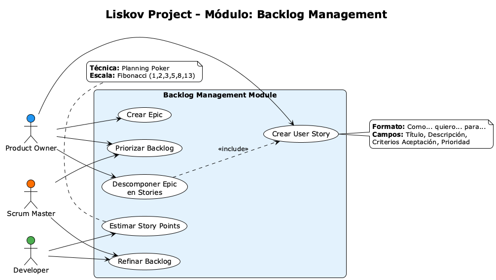
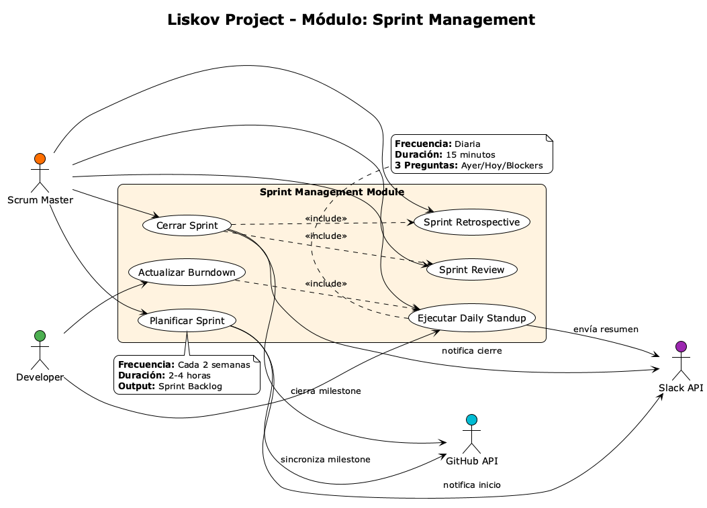
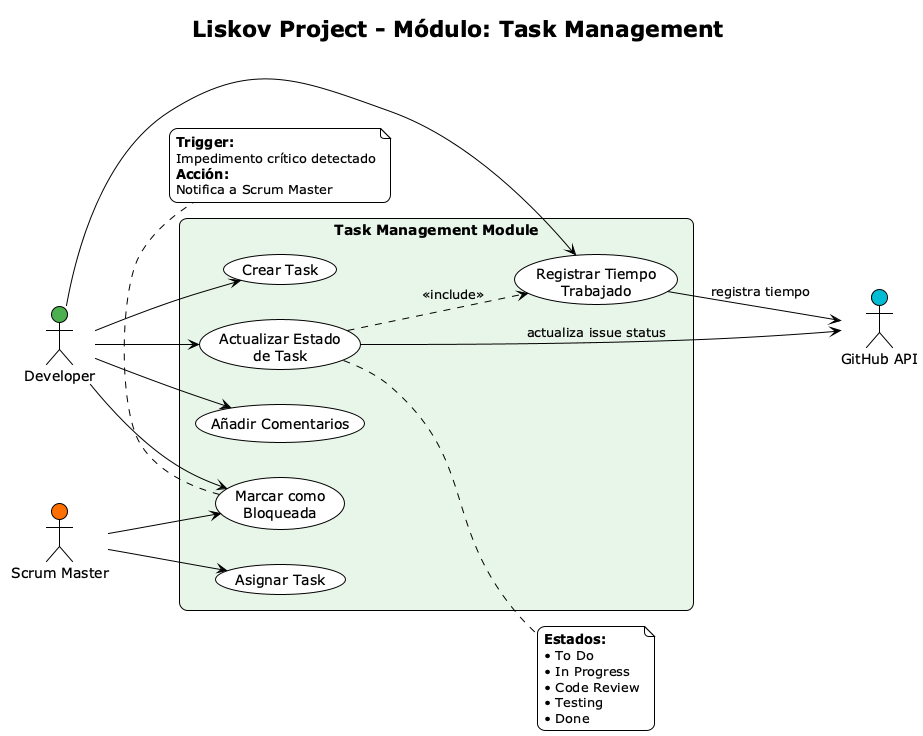
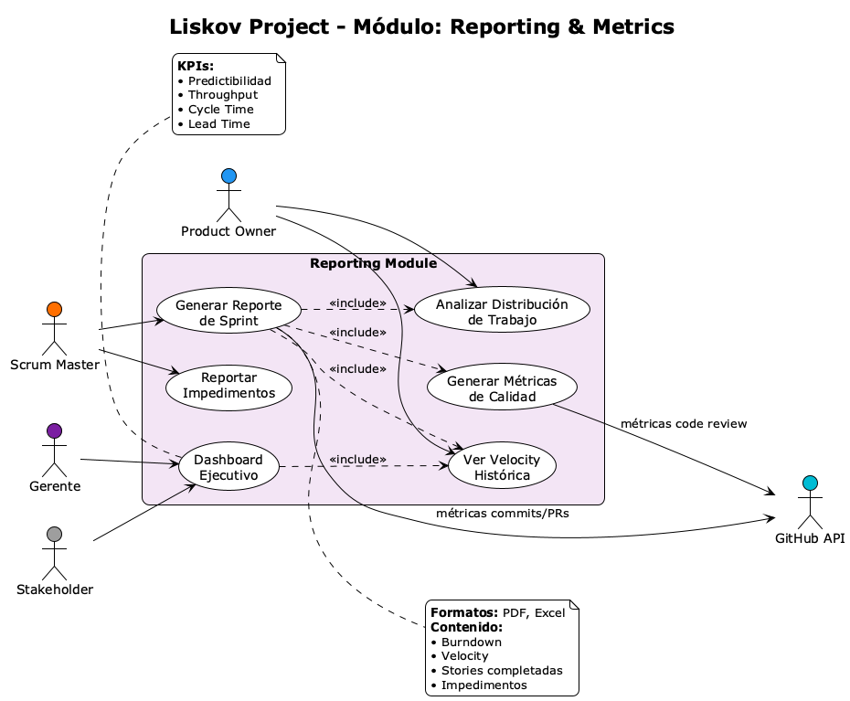
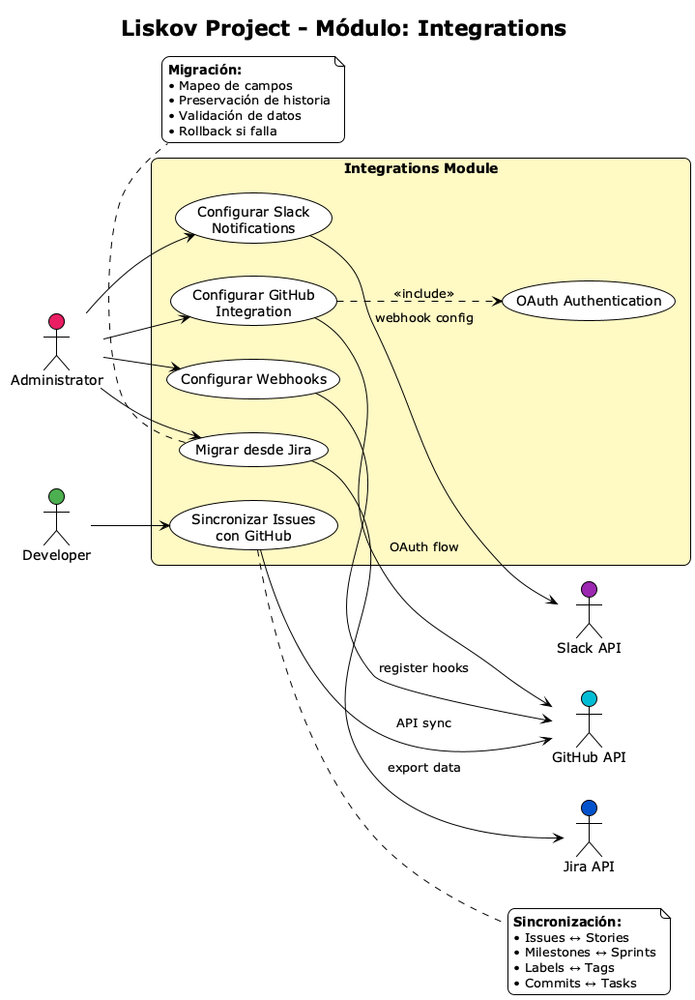

📚 Diagramas de Actividades
Modelado de flujos de trabajo y procesos de negocio
🎯 Objetivos de Aprendizaje
- Dominar el formato "Completamente Vestido" de Alistair Cockburn
- Especificar casos de uso con precondiciones y postcondiciones rigurosas
- Documentar escenarios principales y extensiones (flujos alternativos) detalladamente
- Aplicar la metodología Cockburn a casos de uso complejos de Liskov Project
- Gestionar múltiples actores, garantías de éxito y garantías mínimas
- Conectar la especificación textual con los diagramas de casos de uso (AMS-14)
📚 1. De Diagramas a Especificaciones Detalladas
En AMS-14 aprendimos a crear diagramas de casos de uso que representan visualmente las funcionalidades del sistema. Los diagramas responden:
- ¿QUIÉN? → Actores que interactúan con el sistema
- ¿QUÉ? → Funcionalidades que ofrece el sistema
- ¿RELACIONES? → Include, Extend, Generalization
Sin embargo, los diagramas por sí solos NO responden:
- ❓ ¿CÓMO? → ¿Cuál es el flujo detallado de interacción?
- ❓ ¿CUÁNDO? → ¿Qué precondiciones deben cumplirse?
- ❓ ¿RESULTADO? → ¿Qué se garantiza al terminar?
- ❓ ¿QUÉ PASA SI...? → ¿Cómo manejar errores y casos especiales?
💡 Complementariedad Esencial:
Diagrama de Casos de Uso (AMS-14) = Mapa de ciudad (visión general)
Especificación Textual Cockburn (AMS-15) = Instrucciones GPS paso a paso (detalle de ejecución)
Ambos son necesarios para una especificación completa del sistema.
Niveles de Detalle en Casos de Uso
No todos los casos de uso requieren el mismo nivel de detalle. Cockburn define tres formatos:
| Formato | Descripción | Cuándo Usar | Esfuerzo |
|---|---|---|---|
| Brief (Breve) | 2-3 oraciones resumiendo el objetivo | CU de bajo riesgo, obvios | ⚡ Bajo |
| Casual (Informal) | Párrafos describiendo flujo principal | CU de complejidad media | ⚡⚡ Medio |
| Fully Dressed (Completamente Vestido) |
Todos los campos completos con precondiciones, extensiones, garantías | CU críticos, complejos, alto riesgo | ⚡⚡⚡ Alto |
⚠️ Decisión Estratégica:
No especifiques TODOS los casos de uso en formato completamente vestido. Esto es costoso y genera documentación difícil de mantener.
Regla práctica:
- ✅ Fully Dressed: 20-30% de CU (los más críticos/complejos)
- ✅ Casual: 50-60% de CU (complejidad media)
- ✅ Brief: 10-20% de CU (simples, obvios)
Ejemplo de los Tres Niveles - Liskov Project
Brief: "Cerrar Sesión"
El usuario solicita cerrar sesión. El sistema invalida el token de autenticación y redirige a la página de login.
Casual: "Actualizar Task"
El Developer selecciona una tarea del sprint actual. Modifica el estado (ej: "In Progress" → "Code Review"), actualiza la descripción si es necesario, y registra tiempo trabajado. El sistema valida que la transición de estado sea válida según el workflow configurado, actualiza el burndown automáticamente, y notifica al Scrum Master si la tarea pasa a "Blocked".
Fully Dressed: "Planificar Sprint"
Requiere especificación completa con:
- Precondiciones (backlog priorizado)
- 12 pasos en flujo principal
- 4 extensiones (conflictos, ausencias, etc.)
- Garantías de éxito y mínimas
- Requisitos especiales (performance)
→ Lo veremos en detalle en la siguiente sección
📋 2. Template "Completamente Vestido" de Cockburn
El formato Fully Dressed de Alistair Cockburn es el más completo y riguroso para especificar casos de uso. Contiene 12 campos fundamentales que cubren todos los aspectos de la interacción:
🏗️ Los 12 Campos del Template Cockburn
| Campo | Propósito | Obligatorio |
|---|---|---|
| 1. Identificador + Título | Nombre único y descriptivo (verbo + objeto) | ✅ Sí |
| 2. Nivel | Summary / User-Goal / Subfunction | ✅ Sí |
| 3. Actor Primario | Quién inicia el caso de uso | ✅ Sí |
| 4. Actores Secundarios | Sistemas/actores que proveen servicios | ⚠️ Si aplica |
| 5. Stakeholders e Intereses | Quién tiene interés en el resultado y qué espera | ✅ Sí |
| 6. Precondiciones | Estado del sistema ANTES de ejecutar | ✅ Sí |
| 7. Garantías de Éxito | Estado del sistema DESPUÉS de éxito | ✅ Sí |
| 8. Garantías Mínimas | Estado garantizado INCLUSO si falla | ✅ Sí |
| 9. Trigger (Disparador) | Evento que inicia el caso de uso | ✅ Sí |
| 10. Escenario Principal | Flujo exitoso paso a paso (numerado) | ✅ Sí |
| 11. Extensiones | Flujos alternativos y manejo de errores | ✅ Sí |
| 12. Requisitos Especiales | Requisitos no funcionales (performance, UI, etc.) | ⚠️ Si aplica |
💡 Otros Campos Opcionales (no siempre necesarios):
- Lista de Variaciones Tecnológicas: Diferentes implementaciones posibles
- Frecuencia de Uso: ¿Cuántas veces se ejecuta? (ej: 50 veces/día)
- Cuestiones Abiertas: Preguntas pendientes de resolver
📖 Explicación Detallada de Cada Campo
1️⃣ Identificador + Título
Formato: CU-XX: Verbo + Objeto
Ejemplo: CU-08: Planificar Sprint
Regla: El título debe responder "¿Qué logra el actor?" en lenguaje de negocio.
✅ BIEN: "Asignar tareas al equipo"
2️⃣ Nivel (Goal Level)
Cockburn define 3 niveles según el alcance del objetivo:
- ☁️ Summary (Nube): Objetivo de negocio amplio, compuesto por múltiples CU
Ejemplo: "Gestionar Proyecto Completo" (dura semanas/meses) - 🌊 User-Goal (Mar): Objetivo que el usuario quiere lograr en una sesión
Ejemplo: "Planificar Sprint" (dura 1-3 horas, es el nivel más común) - 🐟 Subfunction (Pez): Paso técnico dentro de un User-Goal
Ejemplo: "Validar Disponibilidad del Equipo" (es llamado por otro CU)
💡 Regla práctica: El 80% de tus CU completamente vestidos deben ser User-Goal.
3️⃣ Actor Primario
El actor que inicia el caso de uso y tiene el objetivo de lograrlo.
Ejemplo Liskov: Scrum Master
4️⃣ Actores Secundarios
Sistemas o actores que proveen servicios al caso de uso, pero NO lo inician.
Ejemplo Liskov:
Sistema de Notificaciones(envía emails al equipo)GitHub API(sincroniza issues)Slack API(notifica en canales)
5️⃣ Stakeholders e Intereses
Lista de quién se beneficia o se ve afectado por este caso de uso y qué espera.
Ejemplo Liskov - "Planificar Sprint":
| Scrum Master | Quiere sprint planificado con capacidad realista y riesgos identificados |
| Developers | Quieren claridad sobre qué tareas abordar, sin sobrecarga |
| Product Owner | Quiere que las historias priorizadas entren en el sprint |
| Gerencia | Quiere visibilidad del progreso y predictibilidad |
6️⃣ Precondiciones
Condiciones que deben ser VERDADERAS ANTES de que el CU pueda ejecutarse.
Ejemplo Liskov - "Planificar Sprint":
- ✅ Scrum Master está autenticado en el sistema
- ✅ Backlog del producto contiene al menos 5 historias priorizadas
- ✅ Equipo de desarrollo está configurado con disponibilidad por miembro
- ✅ Sprint anterior está cerrado (o es el primer sprint)
7️⃣ Garantías de Éxito (Success Guarantees / Postcondiciones)
Estado del sistema DESPUÉS de una ejecución exitosa. Es el "contrato" que el sistema cumple.
Ejemplo Liskov - "Planificar Sprint":
- ✅ Sprint creado con fecha inicio/fin, objetivo definido
- ✅ Historias seleccionadas asignadas al sprint (sprint backlog creado)
- ✅ Capacidad del equipo calculada y registrada
- ✅ Burndown chart inicializado con puntos comprometidos
- ✅ Notificaciones enviadas a todo el equipo (email + Slack)
- ✅ Estado del sprint = "In Progress"
8️⃣ Garantías Mínimas (Minimal Guarantees)
Estado garantizado INCLUSO SI EL CU FALLA o el actor lo abandona. Protege la integridad del sistema.
Ejemplo Liskov - "Planificar Sprint":
- ✅ No se crean sprints duplicados con fechas solapadas
- ✅ No se modifican historias del backlog original
- ✅ Todos los intentos fallidos se registran en el log del sistema
- ✅ Si el usuario abandona a mitad de camino, el sprint queda en estado "Draft" (no "In Progress")
9️⃣ Trigger (Disparador)
El evento específico que inicia el caso de uso.
Ejemplo Liskov:
- Scrum Master selecciona "New Sprint" desde el dashboard de Liskov
- O: Daily standup automática detecta que el sprint anterior terminó (trigger temporal)
🔟 Escenario Principal (Main Success Scenario)
Flujo de interacción paso a paso cuando TODO sale bien. Se numera y alterna entre Actor y Sistema.
Ejemplo Liskov - "Planificar Sprint" (simplificado):
- Scrum Master selecciona "Planificar Nuevo Sprint"
- Sistema muestra backlog priorizado y capacidad disponible del equipo
- Scrum Master define nombre del sprint, fecha inicio/fin, y objetivo
- Sistema valida que las fechas no se solapen con otro sprint activo
- Scrum Master selecciona historias del backlog para incluir en el sprint
- Sistema calcula puntos totales y compara con capacidad del equipo
- Scrum Master confirma la planificación
- Sistema crea el sprint, asigna historias, inicializa burndown, y notifica al equipo
1️⃣1️⃣ Extensiones (Extensions / Alternative Flows)
Flujos alternativos y manejo de errores. Se referencian por el número de paso del escenario principal donde ocurren.
Formato: Paso#Condición: Acciones → Resultado
Ejemplo Liskov - "Planificar Sprint":
4a1. Sistema muestra error "Ya existe un sprint activo en esas fechas"
4a2. Scrum Master ajusta las fechas
4a3. Vuelve al paso 4
5a. Backlog vacío o sin historias priorizadas:
5a1. Sistema muestra advertencia "No hay historias listas para planificar"
5a2. Caso de uso termina sin crear sprint
6a. Puntos seleccionados superan capacidad en >20%:
6a1. Sistema muestra alerta "Sprint sobrecargado: 55 pts vs 40 pts de capacidad"
6a2. Scrum Master decide:
- Remover historias (vuelve al paso 5)
- O continuar con sobrecarga (marca sprint como "riesgoso")
*a. En cualquier momento, Scrum Master cancela:
*a1. Sistema descarta cambios sin crear sprint
*a2. Caso de uso termina
1️⃣2️⃣ Requisitos Especiales
Requisitos no funcionales específicos de este CU: performance, usabilidad, seguridad, etc.
Ejemplo Liskov - "Planificar Sprint":
- Performance: Carga del backlog debe completarse en <2 segundos (hasta 500 historias)
- Usabilidad: Interfaz debe permitir drag-and-drop de historias
- Accesibilidad: Compatible con lectores de pantalla
- Auditabilidad: Todos los cambios deben registrarse en el log con timestamp y usuario
🚀 3. Casos de Uso Completos: Liskov Project
A continuación, veremos 3 casos de uso del Proyecto Liskov especificados en formato Completamente Vestido de Cockburn:
📊 Contexto Visual: Diagrama General de Casos de Uso de Liskov

Este diagrama muestra todos los casos de uso de Liskov organizados por módulos. Los 3 casos especificados a continuación están marcados en el módulo de Sprint Management.
📦 Diagramas por Módulo
A continuación se presentan los diagramas de casos de uso organizados por cada módulo funcional de Liskov:
📋 Módulo 1: Backlog Management

Actores principales: Product Owner, Scrum Master, Developer
Casos de uso: Crear User Story, Priorizar Backlog, Estimar Story Points, Crear Epic
🏃 Módulo 2: Sprint Management

Actores principales: Scrum Master, Developer + APIs externas
Casos de uso: Planificar Sprint, Daily Standup, Cerrar Sprint, Review, Retrospective
✅ Módulo 3: Task Management

Actores principales: Developer, Scrum Master + GitHub API
Casos de uso: Crear Task, Asignar Task, Actualizar Estado, Registrar Tiempo
📊 Módulo 4: Reporting & Metrics

Actores principales: Scrum Master, Product Owner, Gerente, Stakeholder
Casos de uso: Generar Reporte Sprint, Velocity, Distribución Trabajo, Dashboard Ejecutivo
🔗 Módulo 5: Integrations

Actores principales: Administrator, Developer + APIs externas (GitHub, Slack, Jira)
Casos de uso: Configurar GitHub, Sincronizar Issues, Slack Notifications, Migrar Jira
💡 Organización Modular de Casos de Uso
Los 5 módulos de Liskov están diseñados siguiendo el principio de alta cohesión y bajo acoplamiento:
- Backlog Management: Gestión de requisitos y priorización (pre-sprint)
- Sprint Management: Ejecución del ciclo Scrum (core del sistema)
- Task Management: Gestión granular del trabajo diario
- Reporting: Análisis retrospectivo y métricas
- Integrations: Conexión con ecosistema externo
Esta separación facilita el desarrollo paralelo, testing independiente, y escalabilidad del sistema.
📅 CU-08: Planificar Sprint
Diagrama UML: Muestra actores (Scrum Master, APIs externas) y subfunciones incluidas (Validar Fechas, Calcular Capacidad, Autenticar Usuario).
| Identificador | CU-08 |
| Título | Planificar Sprint |
| Nivel | 🌊 User-Goal (Objetivo del Usuario) |
| Actor Primario | Scrum Master |
| Actores Secundarios | Sistema de Notificaciones, GitHub API, Slack API |
👥 Stakeholders e Intereses:
- Scrum Master: Quiere crear un sprint balanceado, con capacidad realista y riesgos identificados
- Developers: Quieren claridad sobre tareas asignadas, evitando sobrecarga
- Product Owner: Quiere maximizar valor entregado, priorizando historias críticas
- Gerencia: Quiere predictibilidad y visibilidad del progreso
⚙️ Precondiciones:
- ✅ Scrum Master está autenticado en Liskov
- ✅ Backlog del producto contiene ≥5 historias priorizadas y estimadas
- ✅ Equipo de desarrollo está configurado (nombre, velocity histórica, disponibilidad)
- ✅ Sprint anterior está cerrado, O es el primer sprint del proyecto
✅ Garantías de Éxito (Postcondiciones):
- ✅ Sprint creado con ID único, nombre, fecha inicio/fin, y objetivo de negocio
- ✅ Sprint Backlog creado con N historias seleccionadas asignadas al sprint
- ✅ Capacidad del equipo calculada (velocity × disponibilidad) y registrada
- ✅ Burndown Chart inicializado con puntos comprometidos y línea ideal
- ✅ Estado del sprint = "In Progress"
- ✅ Notificaciones enviadas al equipo vía email y canal Slack #sprint-planning
- ✅ GitHub Issues sincronizados con etiqueta "sprint-N"
🛡️ Garantías Mínimas:
- ✅ No se crean sprints duplicados con fechas solapadas
- ✅ Backlog original del producto NO se modifica
- ✅ Intentos fallidos registrados en log de auditoría con timestamp y usuario
- ✅ Si el usuario abandona a mitad de proceso, sprint queda en estado "Draft" (no "In Progress")
🔔 Trigger (Disparador):
Scrum Master selecciona "New Sprint" desde el Sprint Dashboard de Liskov
📖 Escenario Principal (Flujo Exitoso):
- Scrum Master selecciona "Planificar Nuevo Sprint"
- Sistema muestra:
- Backlog priorizado (Top 20 historias)
- Velocity histórica del equipo (últimos 3 sprints)
- Capacidad disponible calculada (Story Points)
- Fechas sugeridas (próximas 2 semanas según configuración del proyecto)
- Scrum Master define:
- Nombre del sprint (ej: "Sprint 12 - Dashboard Redesign")
- Fecha inicio y fin (14 días)
- Objetivo del sprint (1-2 oraciones)
- Sistema valida que las fechas NO se solapen con otro sprint activo
- Scrum Master arrastra historias del backlog al Sprint Backlog (drag-and-drop)
- Por cada historia añadida, sistema actualiza contador de Story Points y muestra indicador visual:
- 🟢 Verde: ≤100% capacidad
- 🟡 Amarillo: 100-120% capacidad
- 🔴 Rojo: >120% capacidad
- Scrum Master revisa resumen del sprint:
- 8 historias seleccionadas
- 42 Story Points comprometidos
- Capacidad: 45 SP (93% utilización)
- Scrum Master confirma "Create Sprint"
- Sistema ejecuta transacción atómica:
- Crea registro del sprint en BD
- Asigna historias al sprint (actualiza FK sprint_id)
- Calcula burndown ideal (línea recta desde 42 SP a 0 en 14 días)
- Sincroniza con GitHub (crea milestone "Sprint 12")
- Envía notificaciones (email + Slack webhook)
- Cambia estado a "In Progress"
- Sistema muestra confirmación: "✅ Sprint 12 creado exitosamente" y redirige al Sprint Dashboard
🔀 Extensiones (Flujos Alternativos):
4a1. Sistema muestra error modal: "⚠️ Conflicto: Ya existe Sprint 11 activo (15/Feb - 28/Feb)"
4a2. Scrum Master ajusta fechas de inicio/fin
4a3. Vuelve al paso 4
5a. Backlog vacío o sin historias estimadas:
5a1. Sistema muestra advertencia: "⚠️ No hay historias listas (estado Ready + estimadas)"
5a2. Sistema sugiere "Ir a Backlog Refinement"
5a3. Caso de uso termina sin crear sprint
6a. Scrum Master excede capacidad en >20%:
6a1. Sistema muestra alerta: "🔴 Sprint sobrecargado: 55 SP vs 45 SP de capacidad (122%)"
6a2. Scrum Master decide:
• Remover historias hasta estar <120% (vuelve al paso 5)
• O confirmar con sobrecarga (sistema marca sprint como "At Risk")
9a. Falla sincronización con GitHub API (timeout, auth error):
9a1. Sistema crea el sprint IGUALMENTE (la sincronización NO es crítica)
9a2. Sistema registra error en log: "GitHub sync failed: timeout 5000ms"
9a3. Sistema agenda retry automático en 5 minutos
9a4. Muestra advertencia al Scrum Master: "⚠️ Sprint creado, sincronización con GitHub pendiente"
9b. Falla envío de notificaciones (Slack webhook down):
9b1. Sistema crea el sprint IGUALMENTE
9b2. Sistema registra error en log y agenda retry
9b3. Muestra advertencia al Scrum Master
*a. En cualquier momento antes del paso 8, Scrum Master cancela:
*a1. Sistema muestra confirmación: "¿Descartar cambios?"
*a2. Si confirma: descarta cambios, NO crea sprint, vuelve al dashboard
*a3. Si cancela: vuelve al paso donde estaba
⚡ Requisitos Especiales:
- Performance: Carga del backlog (Top 100 historias) debe completarse en <2 segundos
- Usabilidad: Interfaz drag-and-drop debe ser fluida (60 FPS) con feedback visual inmediato
- Accesibilidad: Compatible con lectores de pantalla (ARIA labels completos)
- Auditabilidad: Registrar en log: timestamp, usuario, historias seleccionadas, capacidad, cambios
- Seguridad: Solo usuarios con rol "Scrum Master" o "Admin" pueden crear sprints
📊 Frecuencia de Uso:
1 vez cada 2 semanas por proyecto (al inicio de cada sprint)
🗣️ CU-09: Ejecutar Daily Standup
Diagrama UML: Actores Scrum Master y Developer, con extensión condicional para "Registrar Impedimentos" cuando hay blockers.
| Identificador | CU-09 |
| Título | Ejecutar Daily Standup |
| Nivel | 🌊 User-Goal (Objetivo del Usuario) |
| Actor Primario | Scrum Master |
| Actores Secundarios | Sistema de Notificaciones, Slack API |
👥 Stakeholders e Intereses:
- Scrum Master: Quiere facilitar reunión eficiente, identificar impedimentos rápidamente
- Developers: Quieren compartir progreso, pedir ayuda en bloqueos, coordinar trabajo del día
- Product Owner: Quiere visibilidad del progreso diario sin interrumpir al equipo
⚙️ Precondiciones:
- ✅ Existe un sprint activo (estado "In Progress")
- ✅ Al menos 1 developer está asignado al equipo
- ✅ Scrum Master está autenticado en Liskov
✅ Garantías de Éxito:
- ✅ Daily standup registrada con fecha, hora, duración, y asistentes
- ✅ Actualizaciones de estado de tareas registradas por developer
- ✅ Impedimentos identificados creados como registros en BD con asignación a Scrum Master
- ✅ Burndown Chart actualizado con progreso real del día
- ✅ Resumen enviado al canal Slack #daily-standup
🛡️ Garantías Mínimas:
- ✅ Estado del sprint NO se corrompe si la reunión se cancela
- ✅ Tareas individuales mantienen su estado anterior si no se actualizan
- ✅ Log de auditoría registra inicio/fin de la reunión
🔔 Trigger:
Opción 1: Scrum Master selecciona "Start Daily Standup" desde Sprint Dashboard
Opción 2: Sistema genera recordatorio automático a las 9:00 AM (configurable)
📖 Escenario Principal:
- Scrum Master inicia Daily Standup
- Sistema muestra tablero de standup con:
- Lista de developers del equipo
- Tareas asignadas a cada uno (del sprint actual)
- Burndown actualizado al día anterior
- Temporizador visual (countdown 15 minutos sugerido)
- Por cada Developer (iterar):
- 3a. Sistema resalta al developer actual
- 3b. Scrum Master o Developer responde las 3 preguntas:
- ¿Qué hice ayer? → Selecciona tareas completadas/progresadas
- ¿Qué haré hoy? → Selecciona tareas a trabajar
- ¿Tengo impedimentos? → Describe bloqueos (texto libre)
- 3c. Sistema actualiza estado de tareas mencionadas (si aplica)
- Scrum Master marca la reunión como "Completada"
- Sistema calcula:
- Story Points completados en las últimas 24h
- Actualiza burndown con punto real del día
- Compara progreso real vs ideal
- Sistema genera resumen:
- Duración: 12 minutos
- Asistentes: 5/6 developers
- Tareas completadas: 3 (8 SP)
- Tareas en progreso: 7
- Impedimentos nuevos: 1
- Sistema envía resumen a Slack #daily-standup y registra en BD
- Sistema muestra confirmación y vuelve al Sprint Dashboard actualizado
🔀 Extensiones:
1a1. Sistema muestra error: "⚠️ No hay sprint activo. Crea un sprint primero."
1a2. Caso de uso termina
3b1. Developer reporta impedimento crítico (blocker):
3b1a. Sistema crea registro de impedimento con prioridad "High"
3b1b. Sistema notifica inmediatamente a Scrum Master vía Slack DM
3b1c. Marca tarea asociada como "Blocked"
3b1d. Continúa con siguiente developer
3b2. Developer ausente (no conectado):
3b2a. Sistema marca asistencia como "Ausente"
3b2b. Scrum Master puede agregar notas manualmente
3b2c. Continúa con siguiente developer
4a. Reunión excede 20 minutos:
4a1. Sistema muestra alerta visual: "⏰ Standup extendido (20 min)"
4a2. Scrum Master puede ignorar o finalizar anticipadamente
7a. Falla envío a Slack:
7a1. Sistema registra resumen IGUALMENTE en BD
7a2. Muestra advertencia: "⚠️ Resumen guardado, sincronización Slack pendiente"
7a3. Agenda retry automático
⚡ Requisitos Especiales:
- Performance: Carga del tablero standup en <1 segundo
- Usabilidad: Interfaz debe ser simple, solo 3 preguntas visibles, sin distracciones
- Tiempo: Temporizador visible para mantener reunión <15 minutos
📊 Frecuencia de Uso:
1 vez por día laboral durante el sprint activo (típicamente 10 veces por sprint de 2 semanas)
📊 CU-15: Generar Reporte de Sprint
Diagrama UML: Múltiples actores primarios (Scrum Master, Product Owner, Gerente), subfunciones incluidas (Calcular Métricas, Generar Gráficos, Exportar PDF) y extensión opcional (Enviar Email).
| Identificador | CU-15 |
| Título | Generar Reporte de Sprint |
| Nivel | 🌊 User-Goal (Objetivo del Usuario) |
| Actor Primario | Scrum Master, Product Owner, Gerente |
| Actores Secundarios | Sistema de Reportes (módulo interno) |
👥 Stakeholders e Intereses:
- Scrum Master: Quiere analizar retrospectivamente el sprint para Sprint Review/Retrospective
- Product Owner: Quiere medir velocity, predictibilidad, y valor entregado
- Gerencia: Quiere métricas de productividad, cumplimiento, y tendencias
- Stakeholders externos: Quieren reporte ejecutivo simple (1 página)
⚙️ Precondiciones:
- ✅ Usuario está autenticado con permisos de lectura en el proyecto
- ✅ Existe al menos 1 sprint cerrado O en progreso en el proyecto
✅ Garantías de Éxito:
- ✅ Reporte generado en formato PDF/Excel (según elección del usuario)
- ✅ Reporte contiene 8 secciones:
- Resumen ejecutivo (objetivo, fechas, capacidad)
- Burndown chart visual
- Velocity histórica (últimos 6 sprints)
- Historias completadas vs comprometidas
- Distribución de trabajo por developer
- Impedimentos registrados y tiempo de resolución
- Métricas de calidad (bugs, code reviews)
- Tendencias y recomendaciones automatizadas
- ✅ Reporte descargado localmente O enviado por email
- ✅ Registro de generación guardado en log con timestamp y usuario
🛡️ Garantías Mínimas:
- ✅ Datos del sprint NO se modifican al generar reporte (solo lectura)
- ✅ Si falla la generación, se registra error en log con detalles técnicos
🔔 Trigger:
Opción 1: Usuario selecciona "Generate Report" desde Sprint Dashboard o Reports Dashboard
Opción 2: Sistema genera reporte automático al cerrar un sprint
📖 Escenario Principal:
- Usuario selecciona "Generate Sprint Report"
- Sistema muestra formulario de configuración:
- Selector de sprint(s): individual o comparativo (hasta 6 sprints)
- Formato: PDF (ejecutivo) o Excel (detallado con datos raw)
- Secciones a incluir: checkboxes para las 8 secciones
- Opciones avanzadas: incluir daily standups, incluir métricas de GitHub
- Usuario selecciona:
- Sprint 12
- Formato: PDF
- Todas las secciones marcadas
- Usuario confirma "Generate Report"
- Sistema muestra progress bar: "Generando reporte... 0%"
- Sistema ejecuta en paralelo:
- 6a. Consulta BD: historias, tareas, impedimentos, daily standups (2 seg)
- 6b. Calcula métricas: velocity, burndown, distribución de trabajo (1 seg)
- 6c. Genera gráficos: burndown, velocity trend, pie charts (2 seg)
- 6d. Consulta GitHub API: commits, PRs, code reviews (3 seg)
- 6e. Renderiza template PDF con datos + gráficos (2 seg)
- Sistema actualiza progress bar a 100%
- Sistema muestra modal de éxito:
- "✅ Reporte generado: Sprint_12_Report_2025-03-01.pdf (2.4 MB)"
- Botón "Download"
- Botón "Email Report" (opcional)
- Usuario descarga el reporte
- Sistema registra en log: user_id, sprint_id, formato, timestamp, tamaño archivo
🔀 Extensiones:
2a1. Sistema muestra mensaje: "⚠️ No hay datos suficientes. Completa al menos 1 sprint."
2a2. Caso de uso termina
6d1. GitHub API no responde (timeout):
6d1a. Sistema genera reporte SIN sección de métricas de GitHub
6d1b. Incluye nota al final: "⚠️ Datos de GitHub no disponibles"
6d1c. Continúa con paso 7
6e1. Generación de PDF falla (librería crashea):
6e1a. Sistema muestra error: "❌ Error generando PDF. Intenta formato Excel."
6e1b. Registra stack trace en log de errores
6e1c. Vuelve al paso 2 (formulario pre-llenado)
9a. Usuario selecciona "Email Report":
9a1. Sistema muestra modal: "Enviar a:" (lista de emails del equipo pre-cargada)
9a2. Usuario agrega/quita emails y confirma
9a3. Sistema envía email con reporte adjunto
9a4. Muestra confirmación: "✅ Reporte enviado a 5 destinatarios"
*a. Usuario cancela durante generación (mientras progress bar está activo):
*a1. Sistema intenta detener proceso de generación (best effort)
*a2. Sistema descarta archivo temporal
*a3. Vuelve al dashboard sin registrar en log
⚡ Requisitos Especiales:
- Performance: Generación de reporte PDF para 1 sprint debe completarse en <10 segundos
- Escalabilidad: Soportar reportes comparativos de hasta 6 sprints sin degradación
- Formato: PDF debe ser profesional, con logo del proyecto, colores corporativos
- Accesibilidad: PDF debe tener metadatos correctos (título, autor, fecha creación)
- Seguridad: Solo usuarios con permisos "Reporter" o superiores pueden generar reportes
📊 Frecuencia de Uso:
2-3 veces por sprint (al cierre del sprint, durante Sprint Review, y bajo demanda de gerencia)
✏️ 4. Ejercicio Práctico: Especifica tu Propio Caso de Uso
Ahora es tu turno. Elige uno de los siguientes casos de uso de Liskov Project y especifícalo en formato Completamente Vestido de Cockburn:
Opción A: Actualizar Estado de Task
Actor Primario: Developer
Descripción: Un developer actualiza el estado de una tarea (ej: "To Do" → "In Progress" → "Code Review" → "Done"), registra tiempo trabajado, y añade comentarios.
Complejidad: Media (8-10 pasos, 3-4 extensiones)
Opción B: Crear User Story en Backlog
Actor Primario: Product Owner
Descripción: Product Owner crea una nueva historia de usuario con título, descripción (formato "Como... quiero... para..."), criterios de aceptación, prioridad, y estimación inicial.
Complejidad: Media (7-9 pasos, 2-3 extensiones)
Opción C: Cerrar Sprint (Sprint Review)
Actor Primario: Scrum Master
Descripción: Al finalizar el sprint, Scrum Master cierra formalmente el sprint, mueve historias incompletas al backlog, calcula velocity real, genera reporte automático, y prepara datos para retrospective.
Complejidad: Alta (10-12 pasos, 4-5 extensiones)
📝 Plantilla para tu Especificación
Usa esta estructura para completar tu caso de uso:
📋 [ID]: [Título del Caso de Uso]
Identificador: CU-XX
Título: [Verbo + Objeto]
Nivel: 🌊 User-Goal
Actor Primario: [Rol]
Actores Secundarios: [Sistemas/Actores de soporte]
👥 Stakeholders e Intereses:
- [Stakeholder 1]: [Qué espera/necesita]
- [Stakeholder 2]: [Qué espera/necesita]
- [Stakeholder 3]: [Qué espera/necesita]
⚙️ Precondiciones:
- ✅ [Condición que debe ser verdadera ANTES]
- ✅ [Otra condición necesaria]
✅ Garantías de Éxito (Postcondiciones):
- ✅ [Estado del sistema DESPUÉS del éxito]
- ✅ [Otro resultado garantizado]
🛡️ Garantías Mínimas:
- ✅ [Estado garantizado INCLUSO si falla]
- ✅ [Protección de integridad]
🔔 Trigger (Disparador):
[Evento específico que inicia el caso de uso]
📖 Escenario Principal (Flujo Exitoso):
- [Actor] hace [acción inicial]
- Sistema [responde con...]
- [Actor] [siguiente acción]
- Sistema [procesa y...]
- ...
🔀 Extensiones (Flujos Alternativos):
[Paso]a1. Sistema [maneja el error]
[Paso]a2. Actor [responde]
[Paso]a3. [Vuelve al paso X o termina]
*a. En cualquier momento, [Actor] cancela:
*a1. Sistema [descarta cambios]
*a2. Caso de uso termina
⚡ Requisitos Especiales:
- Performance: [Requisito de tiempo de respuesta]
- Usabilidad: [Requisito de experiencia de usuario]
- Seguridad: [Requisito de permisos/autenticación]
📊 Frecuencia de Uso:
[Cuántas veces se ejecuta este caso de uso]
💡 Consejos para Completar el Ejercicio:
- ✅ Usa lenguaje de negocio: No digas "hacer click en botón azul", di "selecciona la tarea"
- ✅ Cada paso = 1 interacción completa: Alterna entre Actor y Sistema
- ✅ Sé específico en extensiones: Identifica errores realistas (timeouts, validaciones, permisos)
- ✅ Piensa en garantías mínimas: ¿Qué pasa si el usuario cierra el navegador a mitad de camino?
- ✅ Consulta los 3 ejemplos de Liskov anteriores como referencia de estilo y nivel de detalle
⚠️ Errores Comunes a Evitar:
- ❌ Mezclar lógica de implementación en el escenario principal ("el sistema ejecuta query SELECT...")
- ❌ Olvidar stakeholders no obvios (ej: auditoría, compliance, equipo de soporte)
- ❌ Precondiciones que en realidad son validaciones (esas van en el flujo o extensiones)
- ❌ Extensiones sin referencia al paso del escenario principal (debe ser 3a, 5b, etc.)
- ❌ Escenario principal de más de 15 pasos (probablemente es muy complejo, divide en 2 CU)
🧠 Evaluación de Conocimientos
Demuestra tu comprensión de la metodología Cockburn y casos de uso completamente vestidos